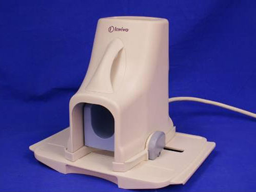
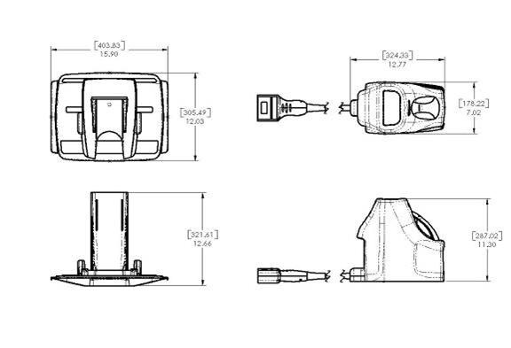

GE Exclusive Use Only
Direction 5500113, Rev# 3
Discovery MR750 3.0T Service Methods
Module Version 7.0, Version Date 6/3/10
GE Exclusive Use Only |
Refer to Illustration 1 to identify the 3.0T HD 8-Channel Foot Ankle Coil (FAC) , catalog M3340CB by Invivo.
Illustration 1: Invivo 3.0T HD 8-Channel Foot Ankle Coil

Table 1: Foot Ankle Coil Shipping List
| Description | GE Part # | Invivo Part # | Qty |
| 3T HD 8-Channel Foot Ankle Coil with Cable (Elecrtical Assembly) | 5273235-2 | 109183 | 1 |
| 3T HD 8-Channel Foot Ankle Coil Operator Manual | 5273235-4 | 4535-302-18601 | 1 |
| HD 8-Channel FAC Baseplate Assembly | 5273235-6 | 4535-300-70381 | 1 |
| HD FAC Ankle Pad | 5273235-7 | 4535-300-67681 | 1 |
| HD FAC Ramp Pad | 5273235-8 | 4535-300-61081 | 1 |
| HD FAC Foot Pad | 5273235-9 | 4535-300-61091 | 1 |
3T HD 8-Channel Foot Ankle Coil Operator's Manual, 5273235-4.
See the 3.0T Coil Compatibility Matrix.
Storage
This equipment must be stored under the following conditions:
Ambient temperature range of +10°C to + 40°C
Relative humidity range of 10% to 90%, non-condensing
Atmospheric pressure range of 500 hPa to 1060 hPa
To store the coil and baseplate, a storage space greater than 40.4 cm/15.9 inches (width) x 30.6 cm/12.0 inches (length) x 34.1 cm/13.5 inches (height) is required.
Dimensions (Width x Length x Height)
| Coil | 17.8 cm x 32.4 cm x 28.7 cm | (12.8 in x 7.0 in x 11.3 in) |
| Phantom | 8.76 cm x 22.2 cm x 26.1 cm | (3.45 in x 8.75 in x 10.3 in) |
| Baseplate | 40.4 cm x 30.5 cm x 32.2 cm | (15.9 in x 12.0 in x 12.7 in) |
Illustration 2 displays the dimensions of the 3.0T HD 8-Channel Foot Ankle Coil.
Illustration 2: FAC Dimensions

Weight
Coil with Cable: 3.70 Kg (8.15 lbs.)
Phantom: 2.83 Kg (6.25 lbs.)
Baseplate: 2.77 Kg (6.10 lbs.)